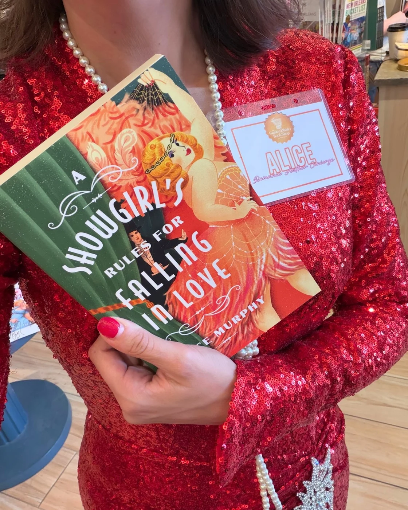
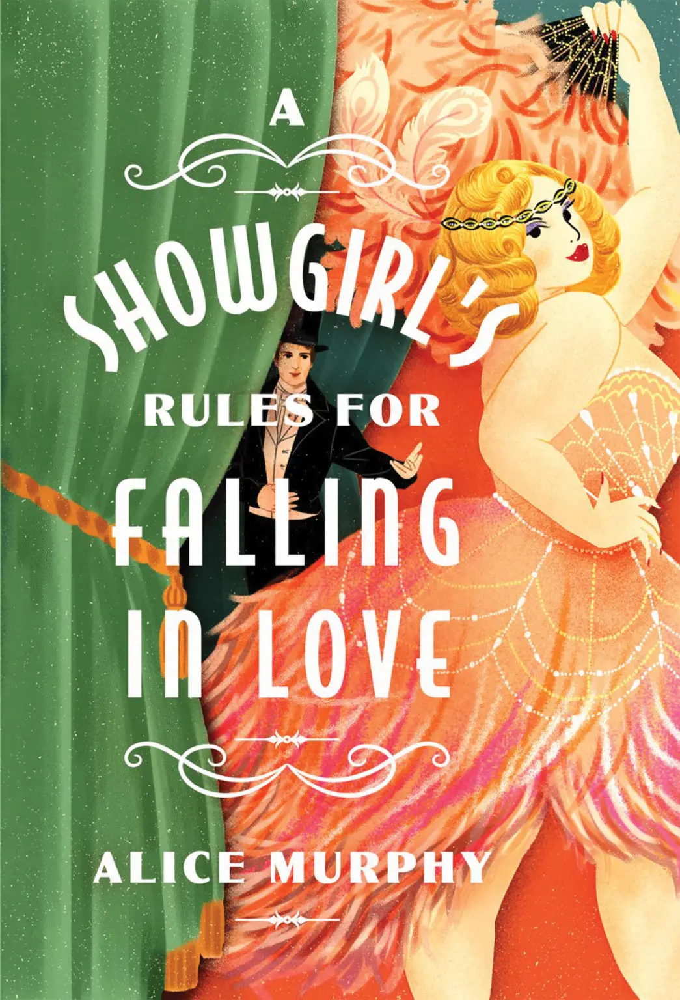
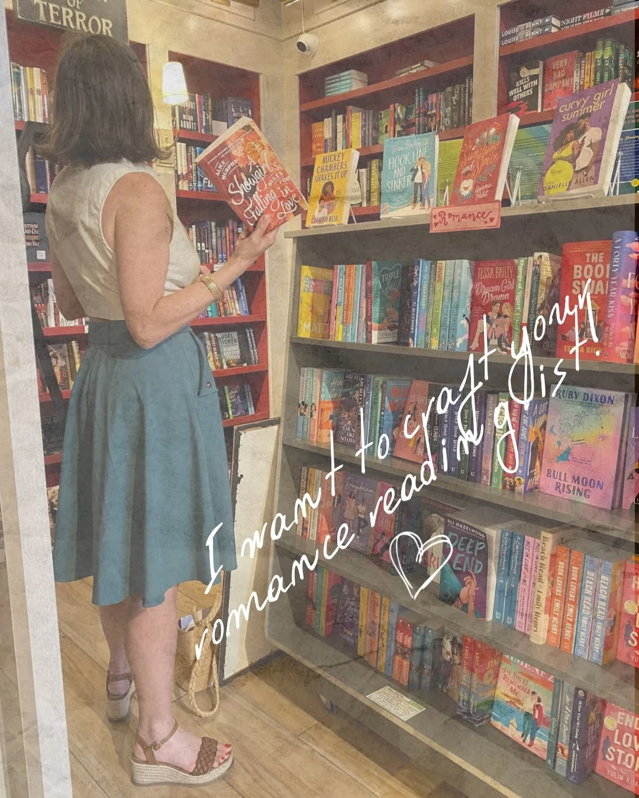

Alice Murphy. Historical romance.
From the stages of 1897 New York to the swinging sixties. Quirky heroines, unexpected love, and a little defiance.
Read the books
The books
Available now · Union Square & Co.
A Showgirl’s Rules
for Falling in Love
New York, 1897. Vaudeville star Evelyn Cross meets entertainment mogul Thomas Gallier. A century later, researcher Phoebe Blair uncovers their story—and finds a romance of her own.
Gilded Age glamour · Dual timelines · Plus-size joy
Find your copy
Meet Alice
Historical romance for the dreamer in us all, from an author with a fondness for secret histories.
Alice Murphy is the pen name of a Hallmark screenwriter and romance author from the deep south. Her stories bring unconventional heroines and their happily-ever-afters into the spotlight.
She writes about showgirls, journalists, and the people who refuse to let their times decide who they can love.
Follow Alice on Instagram
Alice’s journal
Bookshop visits, reader celebrations, and a very good reason to dress up.